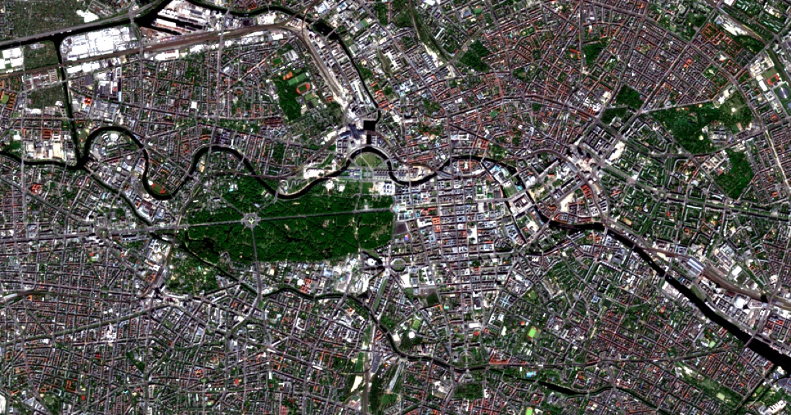

Berlin Deep Weather
Geospatial evidence dossier — Mitte / Tiergarten, central Berlin

This page combines a 2 May 2026 Sentinel-2 satellite view of central Berlin with current weather and air-quality indicators — a fused snapshot of city and park surfaces, not a real-time pollution measurement.
It is a worked example for our paper in Big Earth Data: Towards Earth intelligence: the co-evolution of AI models and agents for digital sustainable development (Jelinek, Qiu & Guo, 2026).
Open the full report →